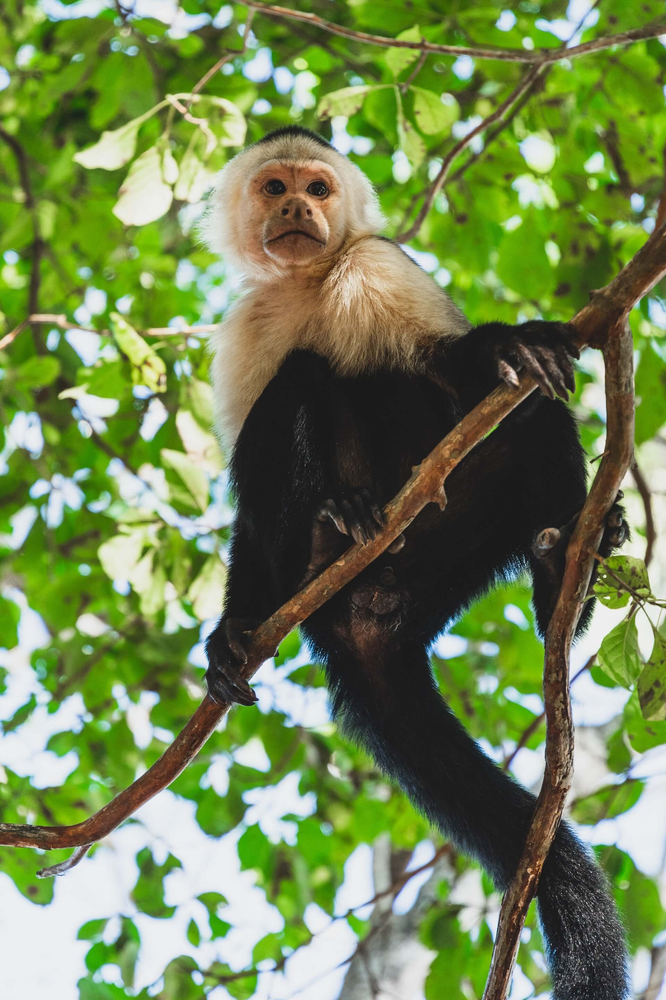
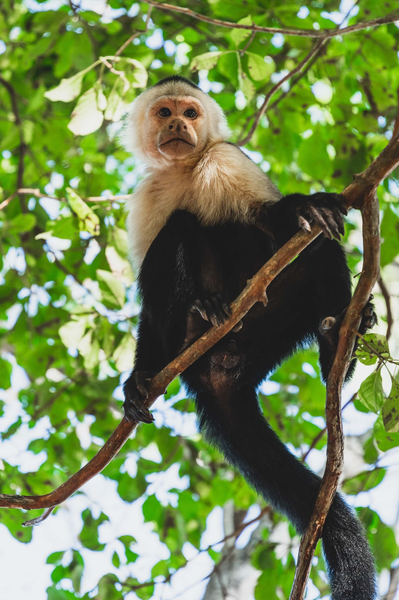

MYLO THE PET MONKEY'S WEBPAGE
Mylo is a capuchin monkey. A type of monkey characterized by it's small stature, long tail and how vocal and social it can be.
 

Some of the characteristics of Capuchin Monkeys are:
- They are quite lazy during the day and you often find them napping around.
- They are highly social creatures and you mostly find them in small groups.
- They are quite aggressive when it comes to defending they're territory.
- They are quite intelligent.
For more interesting and fun facts about capuchin-monkeys, follow this link